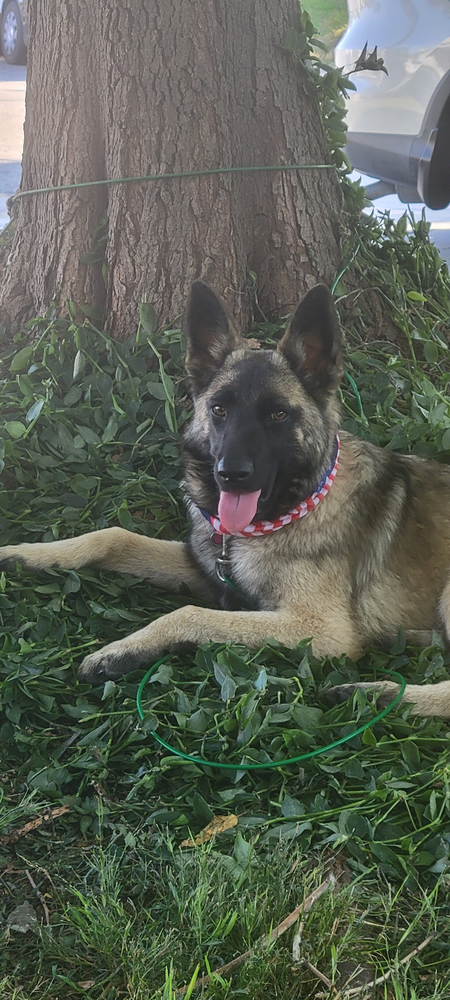
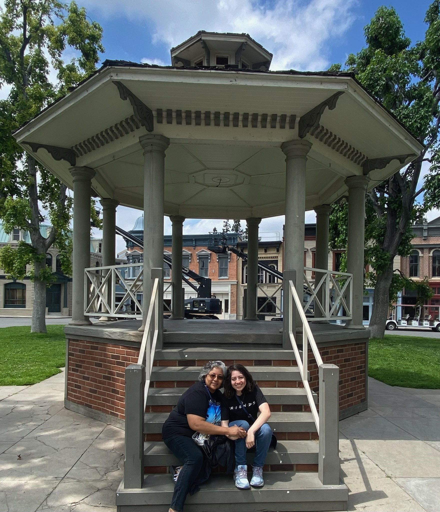
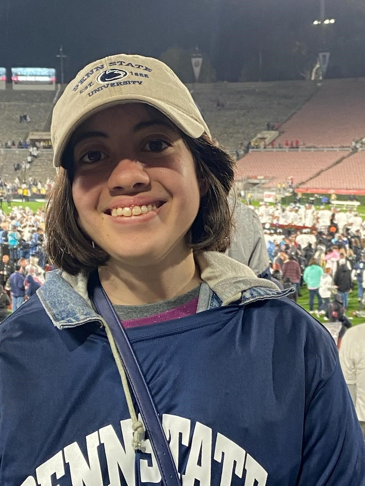
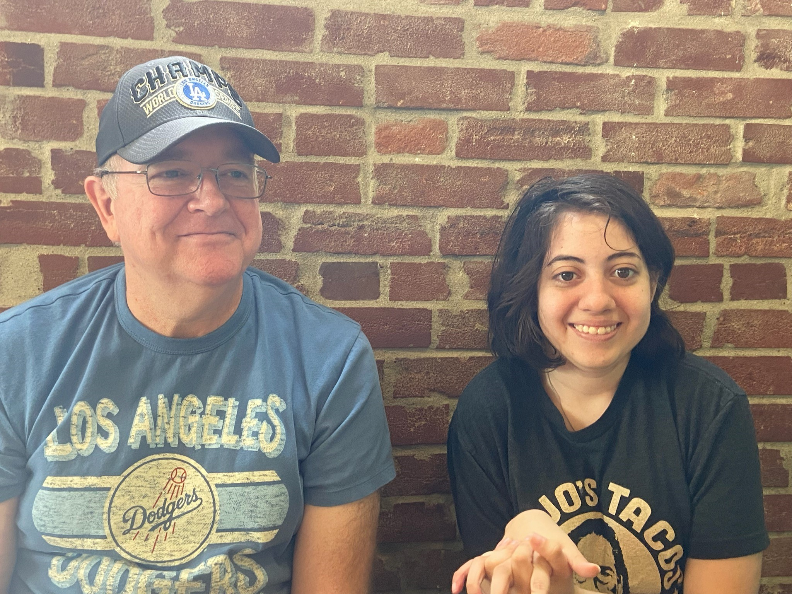
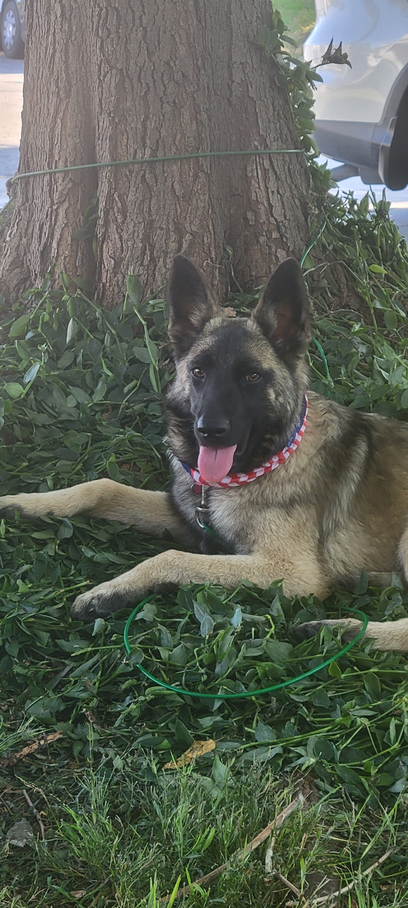
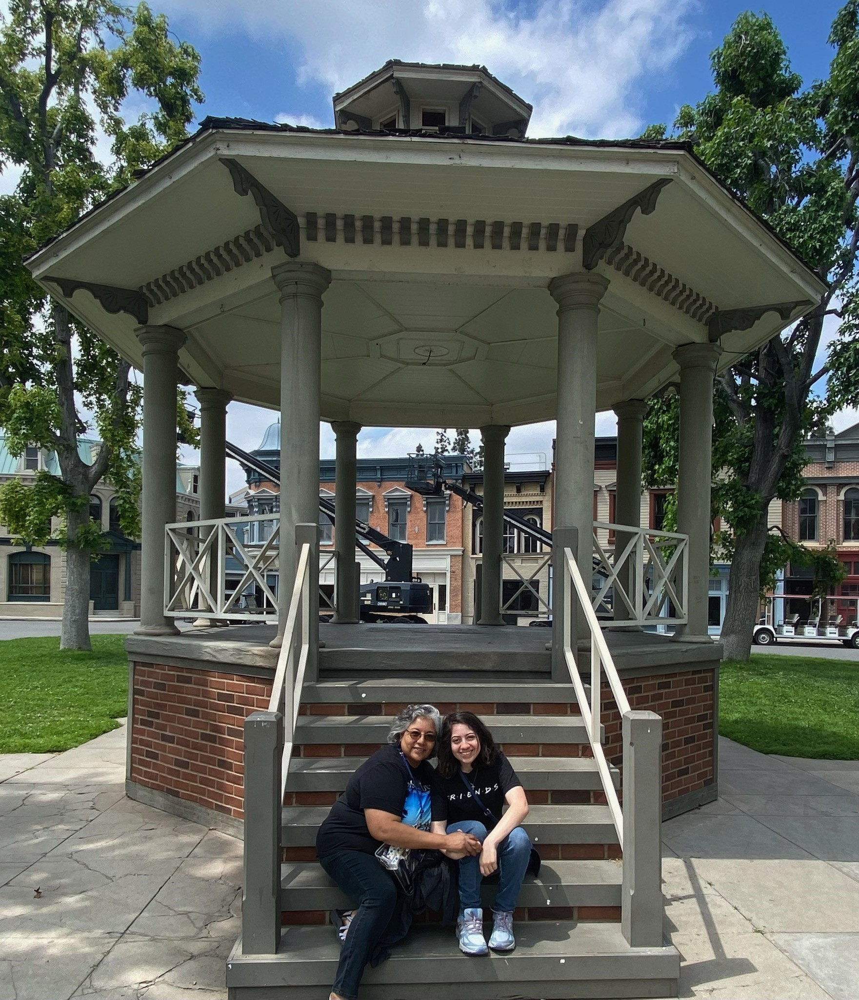
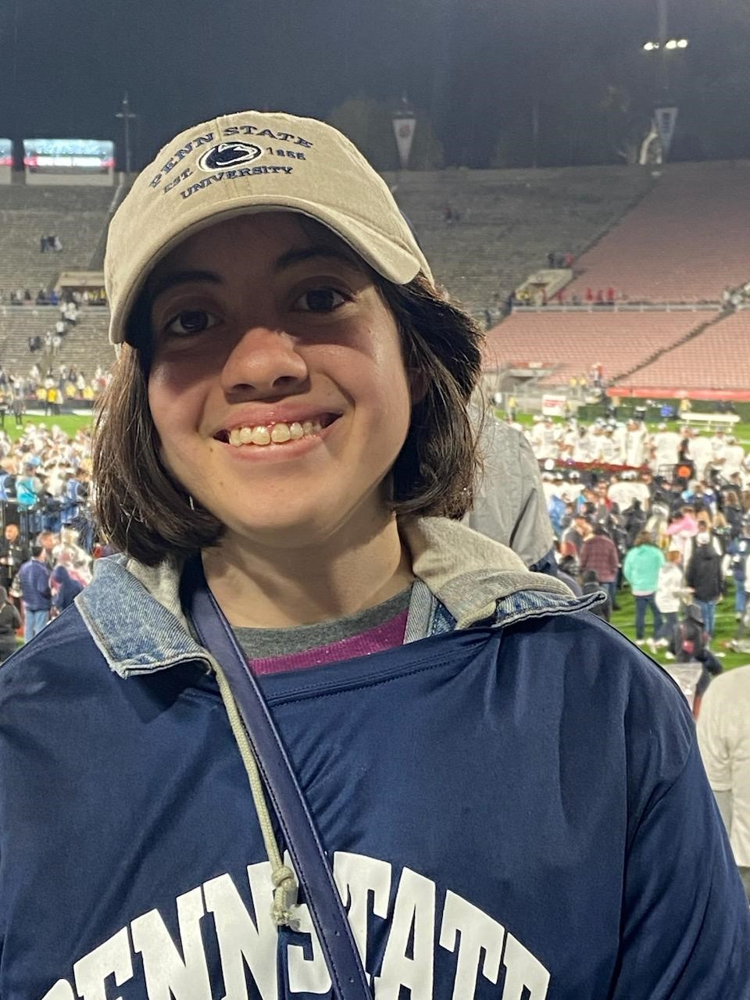
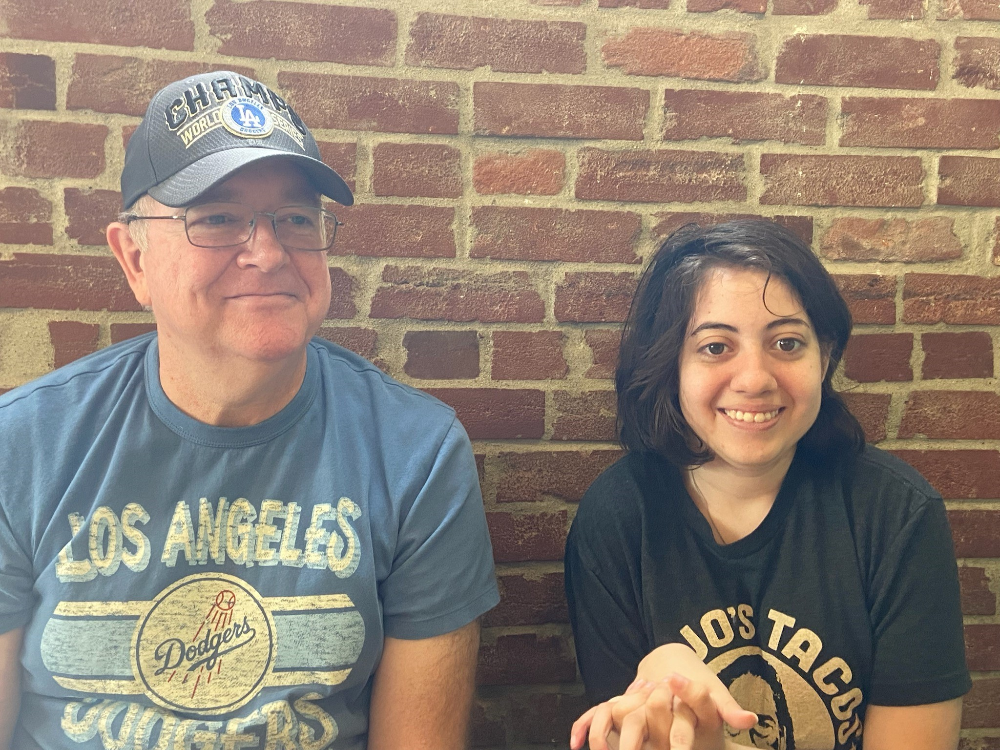
My name is Samantha and I am a student in the Digital Media Arts and Technology program at Penn State Behrend. I'm originally from Monrovia,Ca.One of my favorite things to do back home is to spend time with my dog Sandy and go to Dodgers games with my family.
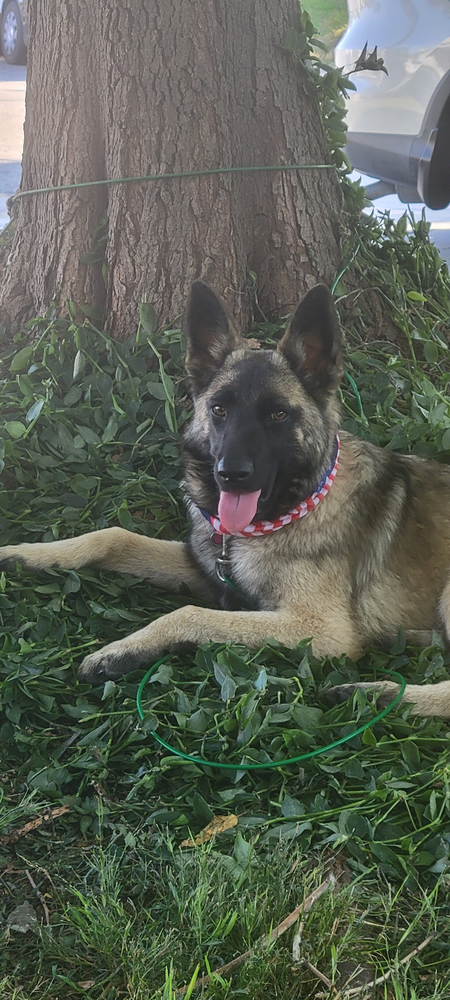
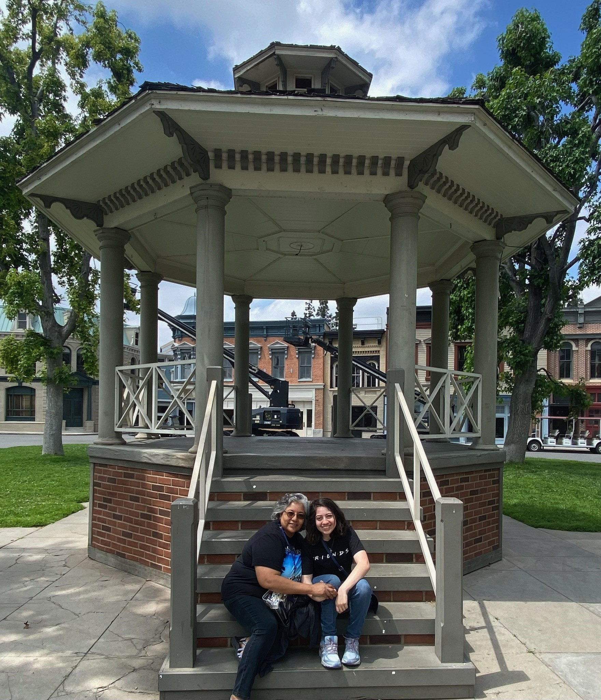
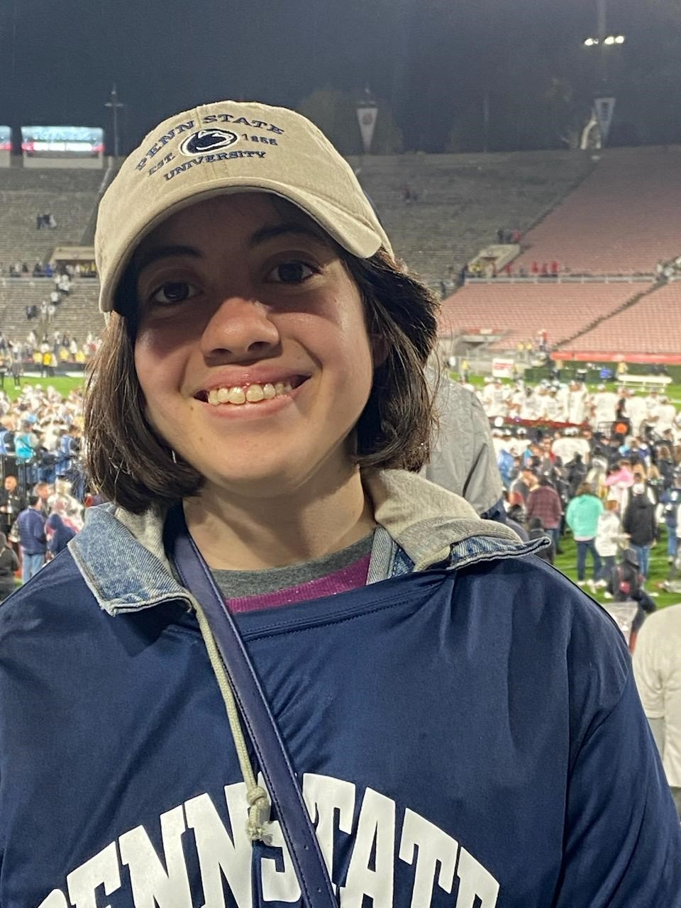
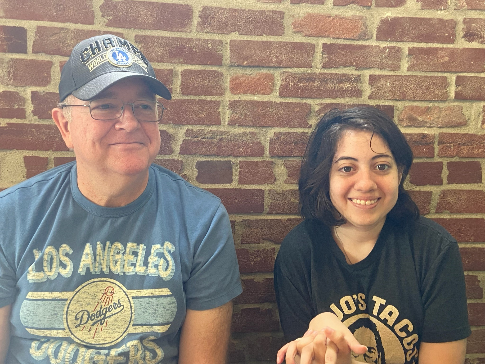
I hope to gain more experience with digital software such as adobe photoshop,premire and after affects. I would also like to earn a minor in marketing and data visualization.Another career goal I have is to learn more about web design and development. Through my Digit courses I have experience with user interfaces and design.
So far I have worked on a few projects as a digit student. Here is an example of one I have worked on:

I have also completed a couple of coding projects in my text encoding and text analysis class.